สำนักหอสมุด มหาวิทยาลัยขอนแก่น
หอสมุดกลางเป็นแหล่งเรียนรู้ที่มีหนังสือ และทรัพยากรการเรียนรู้หลากหลาย เหมาะสำหรับการหาข้อมูล ศึกษา และทำงานกลุ่ม บรรยากาศเงียบสงบ พร้อมบริการอินเทอร์เน็ตภายในอาคาร
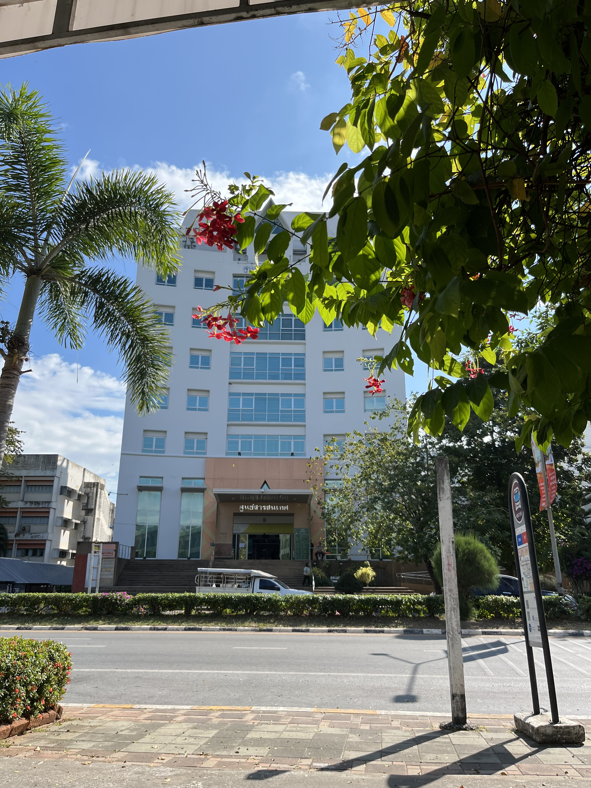


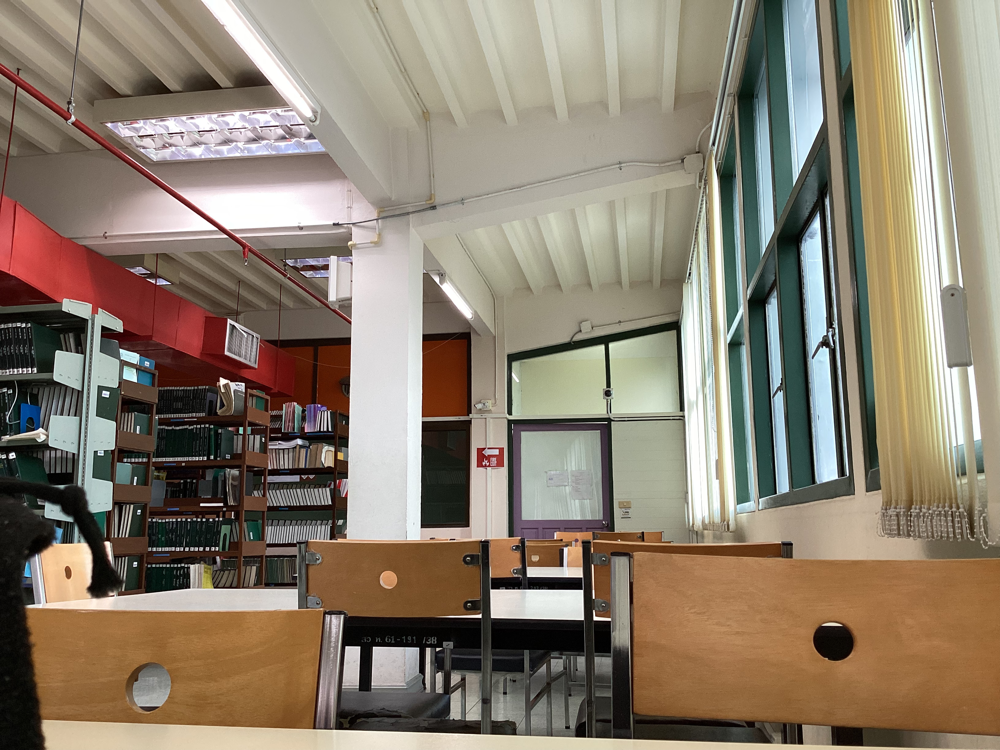
อุทยานเทคโนโลยีการเกษตร มหาวิทยาลัยขอนแก่น
อุทยานเทคโนโลยีการเกษตร เป็นสถานที่สำหรับพักผ่อนจิตใจอย่าแท้จริง ผู้คนนิยมในการเดิน วิ่งทั้งช่วงเช้าและเย็น อีกทั้งในช่วงเย็นที่ถนนริมลู่วิ่งนั้นมีขนม อาหาร และเครื่องดื่มอย่างครบครัน นอกจากนี้ยังมีต้นไม้หลากหลายชนิดรวมถึงสัตว์เลี้ยง เช่น ปลา จำหน่ายอีกด้วย
คลิกเพื่อค้นหาเส้นทาง
ศูนย์ประชุมอเนกประสงค์กาญจนาภิเษก มหาวิทยาลัยขอนแก่น
ศูนย์ประชุมอเนกประสงค์กาญจนาภิเษก มหาวิทยาลัยขอนแก่น เป็นสถานที่จัดประชุม สัมมนา และกิจกรรมขนาดใหญ่ของมหาวิทยาลัย มีห้องประชุมที่ทันสมัย รองรับผู้เข้าร่วมจำนวนมาก เหมาะสำหรับงานวิชาการ งานพิธี และกิจกรรมสำคัญต่างๆ ทั้งในระดับมหาวิทยาลัยและระดับประเทศ

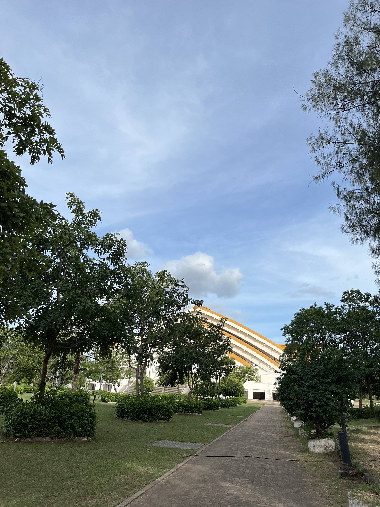
คลิกเพื่อค้นหาเส้นทาง
บึงศรีฐาน มหาวิทยาลัยขอนแก่น เป็นแหล่งน้ำธรรมชาติขนาดใหญ่และเป็นจุดพักผ่อนหย่อนใจยอดนิยมภายในมหาวิทยาลัย บรรยากาศร่มรื่น เหมาะสำหรับการเดินเล่น ออกกำลังกาย ถ่ายรูป และทำกิจกรรมกลางแจ้ง โดยเฉพาะช่วงเย็นจะมีนักศึกษาและประชาชนมาใช้บริการจำนวนมาก
คลิกเพื่อค้นหาเส้นทาง


 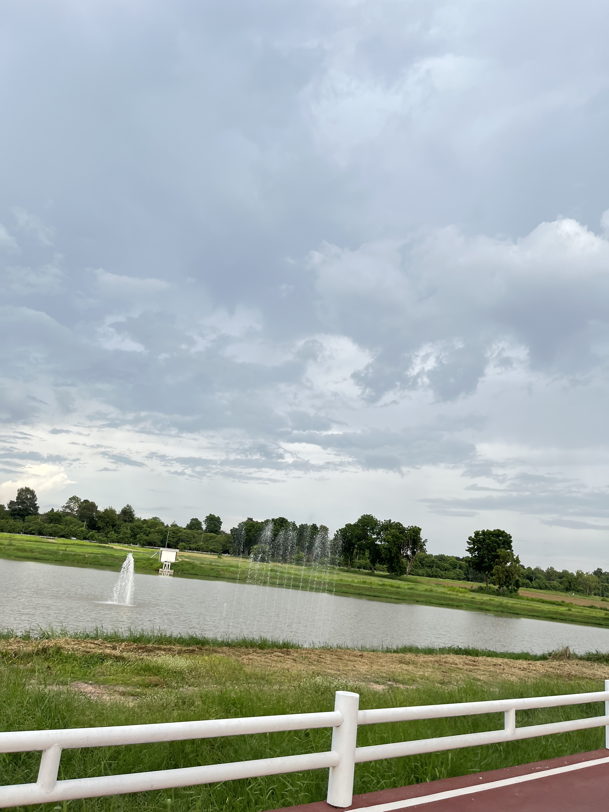
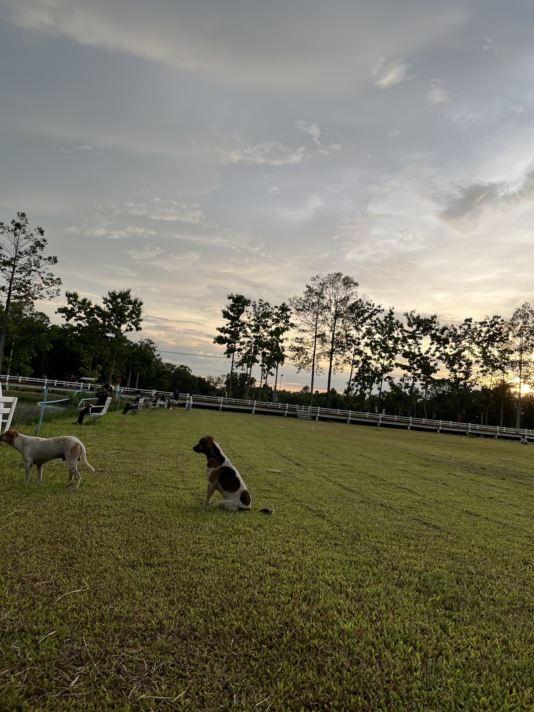
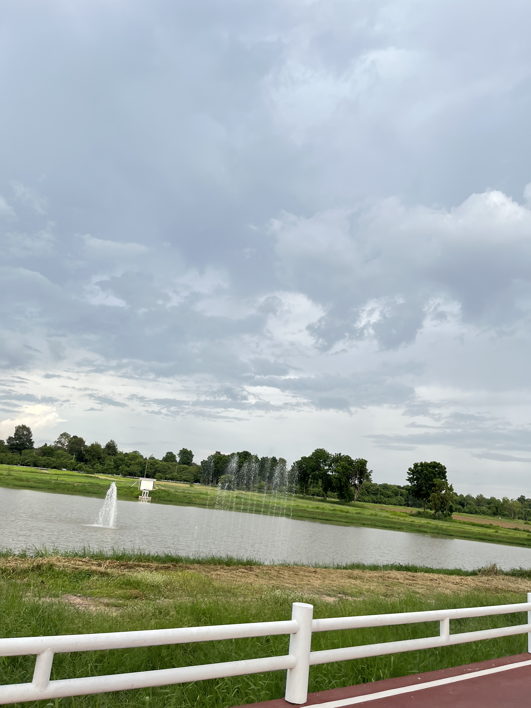
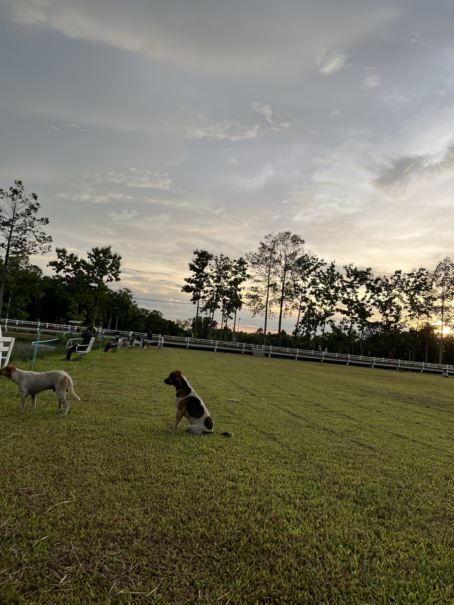


 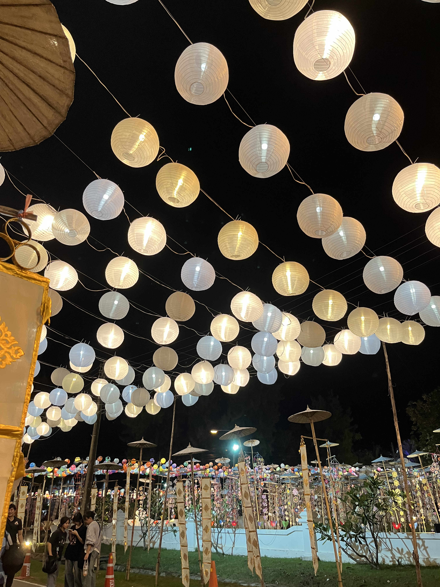
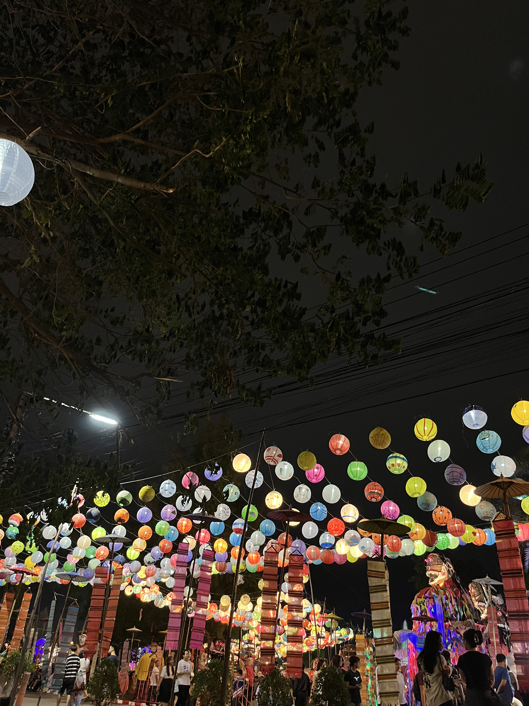
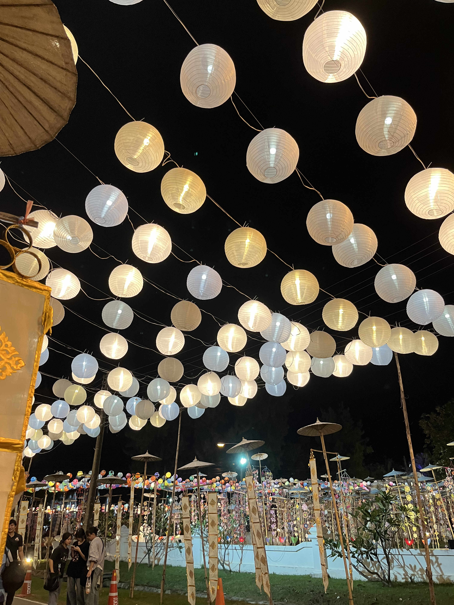
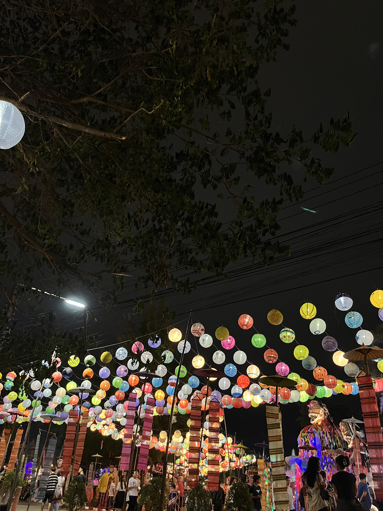